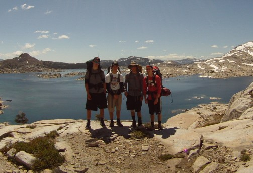

How to plan a trip to the backcountry
Overview
The backcountry is a place of adventure. The uncertainty of mother nature
makes each trip unique and nothing ever goes as planned. Trips require a loose
agenda to navigate these challenges. The trip planning is really just
studying an area enough so that you can comfortably improvise through it.
This webpage provides a general outline of how to plan a trip to the backcountry.
It focuses on providing tips and resources to get to scenic and remote places,
while keeping in mind how the trip planning affects the trip experience. The
philosophy behind this is that too much planning can spoil aspects of trips
that are better experienced naturally. On the other hand, too little planning
can result in unsafe and disappointing trips.
The more experience you have trip planning, the better you will get at it. That
does not necessarily mean your trips will be more enjoyable. The mishaps of
your first backcountry trips will forever hold as some of the best. To seek the
same feeling of adventure, your trip plans will become increasingly crazy. You
will explore places you never would have imagined. Your connection with nature
will grow and the simple thought of a campfire will bring tears to your eyes.
Preliminary questions
Listed below are some initial questions that need to be answered when
planning a trip. The priority of the questions is determined by you.
- When is the trip? Where will the weather allow you to go? Is it
a crowded time of year?
- Who is going? Where are they located? What is their experience
level?
- Who is driving? What type of car are they driving? How far do they
want to drive?
- What type of trip is it? What are your priorities?
- How long are you going for?
Maps
Maps are your main resource when determining the location and plan of a
trip. They provide the geographical information that lures you to a specific
spot. Listed below are some important maps that can be used when planning a trip.
- Physical topographic maps
These are the most important maps of all. They are what you will bring on
your exploration. They provide a refreshing zoomed out view when compared to
a computer based map and also tend to be loaded with the most important
infomation. With some experience, one can easily plan and incredible trip with
just a paper topo map.
- Google maps
Use the topographic and satellite view options. Scroll around looking for
terrain that suits your interests. Listed below are examples of things to look
for when scrolling Google maps,
- Changes in topography
- Changes in terrain color
- Water features
- Remote roads, trails, trailheads, campgrounds
- Backcountry campspots
- When planning car camping trips, it can be nice to use
satellite view to check if a road has pull-offs to camp at. A
good campspot often dictates the chosen location of a car camping
trip. Its pretty easy to spot pullouts from satellite mode, so
don't be suprised if someone is already perched in your chosen
desination. Have backup plans and rememember the cuttiest spots
are those that cannot be pointed out on a map.
- When planning backpacking trips, it is usualy not worth your
time to identify campsites ahead of time.
- Other types of terrain that suit your interests - fishy spots, bike
trails, boating routes, ect.
Additionally, Google Maps is the best software to calculate drive times on
paved roads. Dirt road times are often calculated poorly. Calculate these times
on your own and remember that the dirt road is usually part of the enjoyment of
the trip.
- Public land maps
The
BLM and USGS Protected
Areas Database of the United States maps provide boundaries to public lands.
These are typically the boundaries that you will keep your recreation within. Changing
the layers of these maps can be beneficial. These maps are not always exactly
correct. Some mapping softwares claim to have exact up-to-date boundaries.
Check a public land map even when your trip seems to be 100% in public land.
Often times, there are small parcels of private land within a public land plot.
Paper topographic maps always include public land boundaries.
- Online mapping softwares
These are online maps that allow you to draw a trip route on a map. The
software returns an interactive milage and elevation profile of the route.
Gaia GPS is one of the best free online
mapping softwares. The Gaia Topo map layer is a great map that makes trails and
roads easy to spot. The USGS topo layer should always be checked to see if the
Gaia Topo layer is missing any information. The calculated elevation profiles
sometimes can be questionable.
CalTopo is a similar mapping software.
- Other maps
- Wildfire history map
- Waterfall map
- Fishing maps (dave's, south sierra fish)
- Hot springs map
- Trail conditions
- Near real time satelite
Guidebooks
Guidebooks go beyond maps by providing written descriptions of routes and places. They
are far more useful than what you find searching the internet. Guidebooks are written by
experts that have fully explored the area you are researching, thus, can give trustworthy
opinions on where is best to go. They give you tons of trip options and are formatted so
that you can easily compare trips. They also usually give little photos of the area, for
the better. Used book sites like Thriftbooks are
the best place to buy cheap guidebooks online. Purchase guidebooks covering areas and
activities you want to research. Target the most up to date version of the guidebook you
desire. See photo below for examples of good guidebooks.
Online rescources
The best online rescources are databases formatted similar to guidebooks. Trip report
blogs can also provide great trip ideas and inspiration. However, these reports typically
provide an unnecessary amount of information, photos, and videos. Your time is better spent
exploring nature than scrolling through peoples camera roll.
Rules and regulations
Knowing the rules and regulations of an area is a key part of trip planning. This
information is best obtained on the website of whomever enforces the rules of the area.
Rules change with time, so look for the most up to date info in regards to them. Calling
the ranger station is always a good idea. Rules are sometimes so hard to distinguish that
you don't know them until your at your destination staring at a sign or talking to a ranger.
Below is a list of common regulations to research before a trip.
- Backpacking permits
Many public lands limit the number of vistors to an area by using quotas. A quota is
the number of people that can depart from a trailhead each day. A permit system is used
to enforce the quotas. Learning the permit system is key to sucessfully obtaining the
permit you want. Recreation.gov is the main
website used for permit reservations. Typically, a portion of a trailhead's permits
are made available online 6 months in advance, while the rest are made available closer
to the start date of the trip. Often times permits must be obtained at the exact time they
are made available. For your best chances at these permits, practice obtaining permits
ahead of time for a start date prior to the start date you want. Cancel the reservation
at the checkout window if the practice round was a success. If no permits are availble,
remember backcountry permits apply only to your departure location. You can usually use
a less popular trailhead to get where you want, it will just take more time.
Backcountry trips are often times last minute endevours. This allows you to more accurately
plan around mother nature (i.e. weather, snowmelt, wildfires). Permits cannot always be
obtained last minute, especially if you have a large group size. Many public lands do not
require backpacking permits. Naive hikers assume these areas are less desirable. These
places do not require permits because they are not overpopulated. Do not let permits
dissuade you from going on a backcountry trip.
- Fishing regulations
- Campfire regulations
- Trail and road regulations
Trail and road conditions
Trail and road conditions change with time. Contact the ranger station and others who know
the area to ensure your desired trail or road is open and passable. Know your abilities and
always have a backup plan. The uncertainty of backcountry conditions makes the trip an adventure.

The first backpacking trip I ever planned